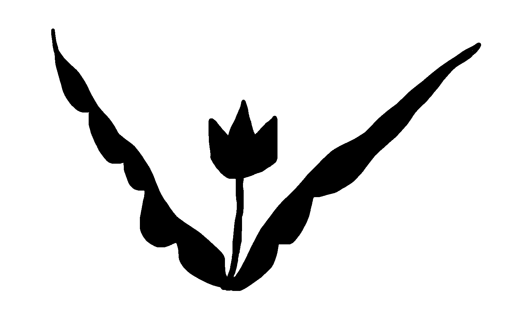

Welcome to the Era Empress (2018 - 2020)
Never before had the Empress despaired to the extent that she did these days. There were landscapes to traverse and time to maneuver. All around, disasters occurred. In the pinhole of lightness she fumbled for tools, tools that had eluded her but gradually fell into step.

Ancestor quilt, hand sewn with found fabrics, 96"h x 65"w, 2020.
The girl sits by the phone half-expectantly half-dejectedly and receives eight phone calls from various members of her bloodline.
They instruct her to do things, ie. put on an energy suit to protect her from unresolved forces in the world, write her name in ink
so she can remember who she is, eat a peach for longevity and good health. Eventually she learns how to pay respects to her forebears
and greet her guests, the audience members standing outside the window. Though separated by a barrier, they figuratively share cups of
tea that she ceremonially pours and presents to them.
A laptop screen shows text being typed out, narrating her actions and reactions. Who is this narrator?
In the final scene, she receives a call from her parents, who remind her to rest every once in a while. She cuts the phone cord and lies down to sleep.
Longing for ancestors is like waiting for a phone call that only comes disguised as mundane chats with friends. Longing for the ones who deeply understand where I come from is only released when I speak and am soothed by my existence in its fullest. Many thanks to Marcia and Jeremy of Maelstrom Collaborative Arts and everybody who came out to see the show. Thanks also to Haumed Rahmani for recording video and Kaitlin K. Walsh for the photo documentation. Developed in collaboration with Jungmok Yi as yFFy.
more by yFFy
A laptop screen shows text being typed out, narrating her actions and reactions. Who is this narrator?
In the final scene, she receives a call from her parents, who remind her to rest every once in a while. She cuts the phone cord and lies down to sleep.
Longing for ancestors is like waiting for a phone call that only comes disguised as mundane chats with friends. Longing for the ones who deeply understand where I come from is only released when I speak and am soothed by my existence in its fullest. Many thanks to Marcia and Jeremy of Maelstrom Collaborative Arts and everybody who came out to see the show. Thanks also to Haumed Rahmani for recording video and Kaitlin K. Walsh for the photo documentation. Developed in collaboration with Jungmok Yi as yFFy.
more by yFFy

{kind=link}
{kind=link}
